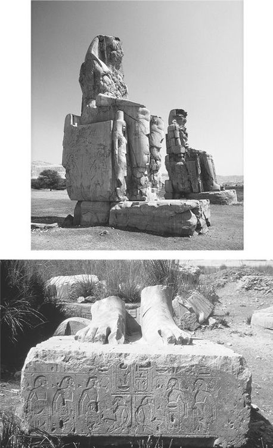
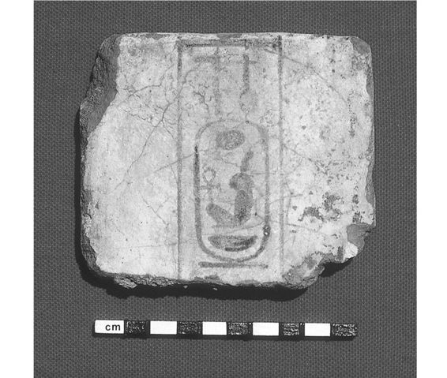
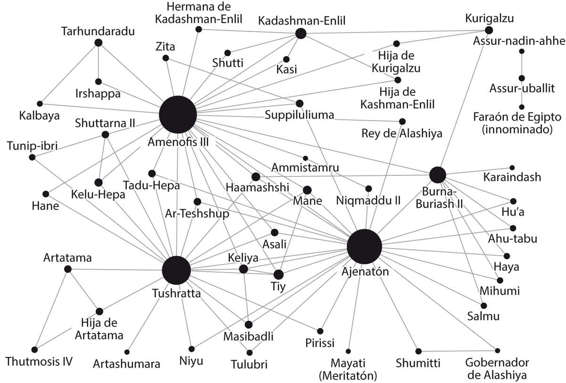

Con una altura de más de dieciocho metros, y destinadas a montar la guardia durante los siguientes tres mil cuatrocientos años —aun cuando el templo funerario que se alzaba tras ellas sufría el saqueo de sus maravillosas piedras y se iba desmoronando día a día—, las dos colosales estatuas que se erguían a la entrada del templo funerario de Amenofis III en Kom el-Hetan se llamaron —y siguen llamándose— «Colosos de Memnón» a consecuencia de una identificación errónea con Memnón, un príncipe etíope mitológico, asesinado en Troya por Aquiles. Las dos estatuas representan la figura sentada de Amenofis III, faraón de Egipto de 1391 a 1353 a. C. En parte por la citada identificación errónea, los Colosos ya eran famosos hace dos mil años y los visitaban turistas griegos y romanos familiarizados con la Ilíada y la Odisea de Homero, que inscribían grafitos en las piernas de las estatuas. De uno de los Colosos —tras resultar dañado por un terremoto en el siglo I a. C.—, se contaba que producía un inquietante silbido al amanecer, porque la piedra se contraía y expandía con el frío de la noche y el calor del día. Por desgracia para el sector turístico antiguo, las obras de restauración llevadas a cabo en época romana, a lo largo del siglo II d. C., acabaron con el «grito divino» diario.[1]
No obstante, pese a lo fascinantes que resultan, en nuestra sucesión de acontecimientos fundamentales del siglo XIV a. C. los Colosos no son tan importantes como el quinto pedestal de las cinco bases de estatua que forman una columna de norte a sur dentro de los límites de lo que antaño fue el templo funerario. El templo estaba situado en la orilla oeste del Nilo, cerca de lo que hoy se conoce como el Valle de los Reyes, al otro lado de la actual ciudad de Luxor. Cada una de las cinco bases sostenía una estatua del rey, de gran tamaño, aunque ni con mucho eran tan altas como los Colosos de la entrada del templo. El patio en el que estaban albergaba al menos cuarenta monumentos semejantes, con sus pedestales.
En cada uno de los cinco pedestales, igual que en muchos otros, hay inscripciones con una serie de topónimos cincelados sobre la piedra dentro de lo que los egipcios llamaban un «óvalo fortificado»: un óvalo alargado, dibujado en vertical, con varias protuberancias pequeñas en todo su perímetro. La intención era representar una ciudad fortificada, incluidas las típicas torres defensivas (de ahí las protuberancias). Cada óvalo fortificado se colocaba sobre la parte inferior del cuerpo de un prisionero atado (o más bien la sustituía). Este cautivo aparecía retratado con los brazos detrás de la espalda y ligados por los codos, a veces con una cuerda alrededor del cuello que lo unía a los otros prisioneros de toda una hilera. En el Egipto del Imperio Nuevo, era una forma tradicional de representar las ciudades y tierras extranjeras; aun cuando los egipcios no controlasen realmente aquellas tierras o ni tan siquiera estuvieran cerca de conquistarlas, seguían escribiendo los nombres dentro de aquellos «óvalos fortificados», a modo de convención artística y política, tal vez como una dominación simbólica.
En total, los nombres de los pedestales formaban una serie de listas geográficas que designaban el mundo que los egipcios conocían en la época de Amenofis III, a principios del siglo XIV a. C. Algunos de los pueblos y lugares más importantes del Oriente Próximo de la época figuraban en la lista, como los hititas en el norte, los nubios en el sur y los asirios y babilonios en el este. En su conjunto, son unas listas únicas en la historia de Egipto.
Pero lo que llama la atención al instante es la lista inscrita por el cantero en el pedestal de la quinta estatua, pues contiene nombres nunca vistos en anteriores inscripciones egipcias. Eran los nombres de ciudades y lugares situados al noroeste de Egipto: nombres extraños, como Micenas, Nauplia, Cnossos, Cidonia y Citerea, escritos en la parte izquierda del frente del pedestal y en su lateral izquierdo, más otros dos nombres escritos por separado en la parte derecha del frente, como si se tratase de títulos colocados a la cabeza de la lista: Keftiu y Tanaya.
¿Qué significaba esta lista y qué representaban los nombres? Durante los últimos cuarenta años, los arqueólogos y egiptólogos han estado debatiendo sobre el sentido de los quince nombres hallados en ese pedestal, a los que hoy nos referimos comúnmente como la «Lista Egea».
Un grupo de arqueólogos alemanes excavó y examinó la base de la estatua y, los demás pedestales, en la década de 1960; pero en algún momento del decenio posterior, fue destruida por accidente. Según cuenta una historia sin verificar, los miembros de una tribu beduina local encendieron una hoguera bajo el pedestal y luego vertieron encima agua fría, intentando que los paneles inscritos se desprendieran, para así poder venderlos en el mercado de antigüedades. La versión oficial es que los daños se debieron a un fuego arrasador desatado en la zona. Fuese quien fuera —o lo que fuera— el responsable, el pedestal se deshizo en casi mil pedazos. Hasta hace muy poco, los arqueólogos solo han dispuesto de unas pocas fotografías a color del pedestal original, lo cual supuso una gran desgracia, porque los nombres de la lista son tan particulares que, de los quince, trece no habían sido vistos nunca antes en Egipto… y ya jamás volverían a verse.

Fig. 5a-b. Los Colosos y la Lista Egea de Amenofis III (fotografías de E. H. Cline y J. Strange).
Lo que ahora ven los turistas en ese lugar (por lo general, desde el interior de un autobús con aire acondicionado que pasa junto a las ruinas de camino al cercano Valle de los Reyes) son los pedestales de las estatuas, y sobre ellos las estatuas, ensambladas de nuevo para alzarse de nuevo bajo el sol abrasador por primera vez desde hace más de tres mil años. En 1998, un equipo multinacional dirigido por la egiptóloga Hourig Sourouzian y su esposo Rainer Stadelmann, el antiguo director del Instituto Arqueológico Alemán en El Cairo, reanudaron las excavaciones de Kom el-Hetan. Desde entonces, excavan en la zona todos los años y han recuperado los fragmentos del pedestal destruido en el que figuraba la Lista Egea (y de los otros pedestales). Ahora se encuentran en pleno proceso de reconstrucción y restauración. Solo en recolocar las ochocientas piezas de la Lista Egea se tardó más de cinco años.[2]
Solo dos de los nombres de la Lista Egea ya eran conocidos para los escribas egipcios y los egiptólogos modernos, los dos que parecían nombres utilizados como encabezamientos de la lista: Keftiu, que era la designación egipcia de la isla de Creta, y Tanaya, que al parecer fue el término egipcio para la Grecia continental. Aquellos dos nombres empezaron a aparecer en los textos egipcios durante la época de Hatshepsut y Tutmosis III, casi un siglo antes, pero nunca en compañía de topónimos específicos de ciudades y áreas concretas del Egeo.
Los otros nombres que aparecen en el pedestal de esta estatua eran tan inusuales, pero al mismo tiempo reconocibles casi de inmediato, que el primer egiptólogo que los publicó en inglés, el eminente profesor Kenneth Kitchen, de la Universidad de Liverpool, dudó al principio sobre la necesidad de ofrecer una traducción, por temor al ridículo académico. En su primera y breve nota sobre la inscripción del pedestal (que ocupó unas pocas páginas de la edición de 1965 de la revista erudita Orientalia), Kitchen señalaba con cautela: «Me cuesta poner por escrito lo que voy a decir; que los lectores hagan caso omiso, si así lo prefieren. Los dos nombres ’Amnisa y Kunusa se parecen demasiado a Amniso(s) y… Cnossos, los famosos antiguos asentamientos de la costa norte de Creta».[3]
En los años siguientes, varios investigadores han estado trabajando para descifrar los nombres de la lista y el significado que se esconde tras su apariencia. El estudioso alemán Elmar Edel publicó el primer estudio concienzudo sobre las listas de los cinco pedestales en 1966; cuarenta años después, en 2005, se publicó una segunda edición, actualizada, corregida y enmendada. En el intervalo, muchos otros expertos dedicaron reflexión y tinta a las posibles interpretaciones de la lista.[4]
Al principio de la lista, bajo los encabezamientos de Keftiu (Creta) y Tanaya (la Grecia continental) aparecen unos pocos nombres de importantes emplazamientos minoicos de Creta, entre los que se cuentan Cnossos y su ciudad portuaria de Amnisos, seguidos por Festos y Cidonia, la lista está ordenada de este a oeste. Todos estos lugares o bien tenían palacios minoicos o, en el caso de Amnisos, funcionaban como puerto de un palacio minoico cercano. El siguiente nombre de la lista es la isla de Citerea, situada a mitad de camino entre Creta y la Grecia continental; y luego van destacados lugares y regiones micénicos de la Grecia continental, incluida Micenas y su ciudad portuaria de Nauplia, la región de Mesenia y quizá la ciudad de Tebas, en Beocia. Al final de la lista se encuentran otros nombres de la Creta minoica, esta vez ordenados de oeste a este; y se vuelve a incluir Amnisos.
La lista guarda una sospechosa semejanza con el itinerario de un viaje circular que partiera de Egipto y avanzara por el Egeo hasta regresar al punto de inicio. Según el orden de los nombres, los viajeros que partían de Egipto se dirigían en primer lugar a Creta, tal vez para visitar a la realeza minoica y a los comerciantes que los egipcios, por entonces, conocían desde hacía casi un siglo. Luego reanudaban la marcha, pasando por Citerea, hasta la Grecia continental y allí visitaban a los micénicos, una nueva potencia que se estaba apoderando de las rutas mercantiles de los minoicos a Egipto y el Oriente Próximo. Y luego volvían a Egipto por la vía de Creta, como ruta más rápida y directa, recalando en Amnisos para aprovisionarse de agua y comida como una de las últimas escalas en el viaje de regreso, del mismo modo que utilizaron aquel puerto como primera parada, poco después de zarpar.
Las listas de los pedestales dan cuenta de todo el mundo conocido por los egipcios de la época de Amenofis III. La mayoría de los nombres ya constaban en otros documentos y tratados; entre los ya conocidos estaban los hititas y los kasitas/babilonios (sobre los cuales hablaremos más adelante), además de ciudades de Canaán. Los topónimos del Egeo, sin embargo, eran excepcionales (y siguen siéndolo) y se inscribieron siguiendo un orden especial. Algunos incluso fueron cincelados de nuevo, porque los tres primeros nombres fueron recortados (hasta su forma actual) en algún momento previo, o quizá posterior, a la exhibición del pedestal.[5]
Algunos investigadores creen que se trata de mera propaganda, pura fanfarronería de un faraón que había oído hablar de lugares remotos y anhelaba conquistarlos o quería convencer al pueblo de que lo había hecho. Otros consideran que la lista no se dedica al autobombo mendaz, sino que se basa en un conocimiento objetivo y contactos reales de aquella época antigua. Esta segunda explicación resulta más probable porque, gracias a la abundancia de pinturas murales de las tumbas aristocráticas del tiempo de Hatshepsut y Tutmosis III, en el siglo XV a. C., sabemos que en aquel siglo se produjeron muchos contactos con el Egeo, incluidos ejemplos en los que comerciantes o embajadores diplomáticos llegaban a Egipto con regalos. Probablemente, aquellos contactos se prolongaron durante el siglo posterior, en época de Amenofis III. Si fue así, en esta lista podríamos tener el registro escrito más antiguo de un viaje circular desde Egipto por el Egeo, un viaje realizado hace más de treinta y cuatro siglos, unas pocas décadas antes de que el rey niño Tutankhamón gobernase sobre el país eterno.
Hay otra razón fascinante a favor de la posibilidad de que estemos contemplando la documentación de un viaje realizado a principios del siglo XIV a. C. desde Egipto por el Egeo, y no un registro de los micénicos y minoicos que llegaban a Egipto. Hay varios objetos con el cartucho (el nombre real) ya sea de Amenofis III o de su esposa la reina Tiy recuperados por los arqueólogos en seis yacimientos diseminados por la zona del Egeo: en Creta, la Grecia continental y Rodas. Y existe una correlación entre los lugares del hallazgo de estos objetos y los yacimientos nombrados en la Lista Egea, pues cuatro de los seis lugares aparecen entre los nombres grabados en ella.
Algunos de estos objetos con inscripciones son simples escarabeos y sellos pequeños, pero tenemos también un jarrón; todos ellos tienen el cartucho ya sea del faraón o de su esposa. Son más importantes los numerosos fragmentos de fayenza, un material a medio camino entre la alfarería y el vidrio, que se encontró en Micenas, probablemente la ciudad más destacada de la Grecia del siglo XIV a. C. Estos fragmentos, de doble cara, de los que conservamos al menos doce, provienen de un total de nueve placas originales (o quizá más), todas ellas de unas medidas de entre quince y veinte centímetros de longitud por diez de altura, con un grosor inferior a una pulgada (dos centímetros y medio). En todos se cocieron títulos de Amenofis III, inscritos con pintura negra, y en ambas caras de la placa leemos: «El buen dios, Neb-Maat-Re, hijo de Re, Amenofis, príncipe de Tebas, dado vida».[6]
Los egiptólogos entienden que estos objetos son placas de los «depósitos fundacionales». Suelen encontrarse, al menos en Egipto, en distintos depósitos bajo los templos o, en ocasiones, bajo las estatuas de los reyes.[7] Cumplen la misma función que las cápsulas del tiempo en nuestra cultura actual y la misma que cumplían en Mesopotamia desde la primera Edad del Bronce. Suponemos que su misión consistía en asegurar que los dioses y las generaciones venideras conocieran la identidad y la generosidad del donante/constructor, y la fecha en que se terminó el edificio, la estatua o la construcción que fuera.
Lo que singulariza estas placas micénicas es, sencillamente, que son las únicas de todo el Egeo. En realidad, de entre todos los lugares del mundo mediterráneo antiguo, son exclusivas de Micenas, porque placas de cerámica vidriada como aquellas, con el nombre de Amenofis III, jamás se han encontrado, fuera de Egipto, en ninguna otra parte. En Micenas, los primeros fragmentos fueron descubiertos y publicados por arqueólogos griegos ya a finales del siglo XIX y principios del XX; por entonces se creía que eran de «porcelana» y el nombre de Amenofis aún no se había reconocido o descifrado claramente. Con los años, fueron apareciendo más placas, entre ellas las que rescató el eminente arqueólogo lord William Taylor dentro del Centro de Culto de Micenas. El fragmento más reciente fue descubierto hace tan solo unos años por Kim Shelton, arqueólogo de Berkeley (California), a bastante profundidad, dentro de un pozo de Micenas.
Ninguno de los fragmentos se ha recuperado en su contexto micénico original. En otras palabras: no tenemos ni la menor idea de qué uso se les daba en origen. Pero el mero hecho de que estén en Micenas, y en ninguna otra parte del mundo, indica que probablemente, en la época de Amenofis III, existió una relación especial entre este lugar y Egipto; sobre todo si tenemos en cuenta que también se encontró en Micenas el jarrón de Amenofis III, además de los dos escarabeos de su esposa, la reina Tiy. Si pensamos que esta región estaba en el límite —la mismísima periferia— de la región conocida y civilizada con la que Egipto mantuvo contactos en este período, la correlación de estos objetos con los nombres de la Lista Egea nos sugiere que, probablemente, durante el reinado de Amenofis III se produjo algún suceso fuera de lo común en cuanto a relaciones internacionales se refiere.
Los objetos importados de Egipto y el Oriente Próximo hallados en el Egeo forman un modelo interesante, vinculado tal vez a la Lista Egea. En apariencia, la Creta minoica continuó siendo el destino principal, en el Egeo, de las rutas comerciales que partían de Egipto y el Oriente Próximo, al menos durante la primera parte del siglo XIV a. C. Sin embargo, dado que en Creta se han encontrado en cantidades aproximadamente iguales objetos procedentes de Egipto, Canaán y Chipre, podría suceder que los productos egipcios ya no fuesen la carga principal de los comerciantes y mercaderes que navegaban entre Creta y el Mediterráneo oriental, como sí ocurría en los siglos anteriores. Si los enviados y comerciantes minoicos y egipcios coparon las rutas del Egeo en los primeros tiempos, ahora lo más probable es que se les hubieran unido (o incluso los hubieran sustituido) otros procedentes de Canaán y Chipre.
Esta situación internacional más compleja se prolongó a lo largo de los dos siglos posteriores, aunque ya a finales del siglo XIV a. C. se aprecia un cambio en la importación de productos extranjeros en el Egeo. Al mismo tiempo que se produce una caída repentina en la cifra de importaciones a Creta, se constata un gran crecimiento en las de la Grecia continental. Si este traslado del peso de las importaciones —de Creta a la Grecia continental— es real, cabe la posibilidad (aunque claramente hipotética) de que el descenso y cese definitivo de la llegada de productos orientales a Creta pudo estar relacionado con la destrucción de Cnossos hacia 1350 a. C., y con el hecho de que, al poco tiempo, los micénicos tomaran el control de las rutas comerciales a Egipto y el Oriente Próximo.[8]
La Lista Egea de Amenofis III puede ser un testimonio de esta situación, puesto que los lugares que se nombran en el pedestal de la estatua incluyen tanto lugares minoicos en Creta como lugares micénicos de la Grecia continental. Si una embajada egipcia hubiera sido enviada al Egeo durante el reinado de Amenofis III, quizá se le confiara una misión doble: ratificar los contactos con un antiguo y valioso socio comercial (los minoicos) y establecer relaciones con una nueva potencia en alza (los micénicos).[9]
Probablemente, la existencia de la Lista Egea no debería sorprendernos, ni tampoco la de otras listas similares en el templo, que en conjunto catalogan el mundo conocido por los egipcios en el siglo XIV a. C. En efecto, otras pruebas nos indican asimismo que Amenofis III era consciente de la necesidad de establecer relaciones con potencias extranjeras, sobre todo con los monarcas de tierras de importancia diplomática o comercial. Acordó tratados con muchos de estos reyes y consolidó los acuerdos celebrando bodas con varias de sus hijas. Así lo atestigua la correspondencia que mantuvo con esos reyes, conservada en un archivo de inscripciones sobre tablillas de arcilla, descubierto en 1887.

Fig. 6. Placa de fayenza, de Amenofis III, descubierta en Micenas (fotografía de E. H. Cline).
La historia comúnmente aceptada sobre el descubrimiento de este archivo cuenta que lo halló una campesina mientras recogía yesca o tierra fértil en la moderna Tell el-Amarna, donde se encuentran las ruinas de la ciudad en otro tiempo llamada Ajetatón (que significa «horizonte del disco solar»).[10] Amenofis IV, el hijo hereje de Amenofis III, más conocido como Ajenatón, había edificado a mediados del siglo XIV a. C. una nueva capital.
Ajenatón sucedió a Amenofis III, pero, probablemente, primero gobernó durante varios años con su padre, hasta que este falleció, en 1353 a. C. Al poco de asumir el poder en solitario, Ajenatón puso en marcha lo que hoy se conoce como la «Revolución de Amarna». Clausuró los templos que pertenecían a Re, Amón y otras deidades principales, se adueñó de sus tesoros ingentes y se reservó un poder inigualable como jefe religioso, militar y gubernamental. Condenó el culto a cualquier deidad egipcia, salvo la de Atón, el disco solar, que él —y solo él— estaba autorizado a adorar directamente.
En ocasiones se considera este el primer caso de monoteísmo, puesto que, en apariencia, se rendía culto solo a un dios, pero se trata de una cuestión bastante discutible (que ha sido objeto de numerosos debates académicos). Para los egipcios de a pie, existían fundamentalmente dos dioses: Atón y Ajenatón, porque el pueblo solo podía rezar a Ajenatón y luego este, a su vez, rezaba a Atón en su nombre. Es posible que Ajenatón fuera un hereje religioso y, hasta cierto punto, incluso un fanático; pero antes que todo, se mostró calculador y ávido de poder. De hecho, cabe la posibilidad de que su revolución religiosa fuese una hábil maniobra política y diplomática, concebida para restablecer el poder de la monarquía, un poder que había ido pasando a manos de los sacerdotes durante los reinados de los faraones anteriores.
Pero Ajenatón no deshizo nada que sus antecesores hubieran puesto en marcha. En particular, reconoció la importancia de cuidar las relaciones internacionales, sobre todo con los reyes de las tierras vecinas. Ajenatón conservó la costumbre de su padre con respecto a las negociaciones diplomáticas y las asociaciones comerciales con potencias extranjeras, ya fueran de primer o segundo nivel, incluidos Suppiluliuma y los hititas.[11] Mantuvo en su capital, Ajetatón, un archivo de la correspondencia con estos reyes y gobernadores. Son las llamadas «cartas de Amarna», inscritas en tablillas de arcilla, que la campesina descubrió de forma accidental en 1887.
El archivo se encontraba originalmente en la «oficina de documentación» de la ciudad. Es un auténtico tesoro. Recoge la correspondencia con los reyes y gobernadores con quienes tanto Amenofis como su hijo Ajenatón habían mantenido relaciones diplomáticas, incluidos los mandatarios chipriotas e hititas, así como los reyes babilonios y asirios. Disponemos también de cartas dirigidas a (y remitidas por) gobernantes cananeos locales, como Abdi-Hepa de Jerusalén y Biridiya de Megido. En las cartas de estos gobernantes locales, que solían ser vasallos de los egipcios, abundan las llamadas de socorro a los egipcios; en cambio, las que se cruzaron entre los gobernantes de las grandes potencias (egipcios, asirios, babilonios, mitanios e hititas) suelen testimoniar peticiones y regalos propios de un estrato diplomático muy superior. Este archivo de Amarna, junto con el del siglo XVIII a. C. que se descubrió en Mari, está entre los primeros de la historia universal que sirven para documentar las relaciones internacionales intensas y duraderas que se dieron en la Edad del Bronce en los territorios de Egipto y el Mediterráneo oriental.[12]
Las cartas estaban escritas en acadio, la lengua franca que la diplomacia contemporánea usaba para las relaciones internacionales, en cerca de cuatrocientas tablillas de arcilla. Al haberse vendido en el mercado de antigüedades poco después de ser descubiertas, hoy día las tablillas se encuentran repartidas por museos de Inglaterra, Egipto, Estados Unidos y la Europa continental, tales como el Museo Británico en Londres, el Museo de El Cairo en Egipto, el Louvre en París, el Museo Oriental de Chicago, el Museo Pushkin de Rusia y el Vorderasiatisches Museum de Berlín (que posee casi dos tercios de las tablillas).[13]
Estas cartas, incluidas las copias de las enviadas a gobernantes extranjeros y las respuestas de aquellos gobernantes, nos permiten profundizar en el estudio de los vínculos comerciales e internacionales en la época de Amenofis III y Ajenatón, a mediados del siglo XIV a. C. Es obvio que buena parte del contacto implicaba una «donación de regalos» realizada al máximo nivel, entre los propios monarcas. Por ejemplo, una carta de Amarna enviada a Amenofis III por Tushratta, el rey de Mitanni, en la Siria septentrional, que ascendió al trono hacia 1385 a. C., empieza dedicando un párrafo a los saludos acostumbrados y continúa hablando de los regalos enviados a través de sus mensajeros:
Di[cho] a Nibmuareya (Amenofis III), rey de Egipto, mi hermano: Así (habla) Tushratta, rey de [M] itanni, tu hermano. Todo va bien para mí. Que todo vaya bien para ti. Que todo vaya bien para Kelu-Hepa (tu esposa), para tu casa, para tus mujeres, para tus hijos, para tus grandes [los hombres principales], para tus guerreros, para tus caballos, para tus carros, en tu país, ¡que todo vaya muy bien!…
Te envío con la presente 1 carro, 2 caballos, un servidor, una sirvienta, formando parte del botín del país de Hatti. Como regalo de homenaje a mi hermano, te envío cinco carros y cinco tiros de caballo. Como regalo de homenaje para Kelu-Hepa, mi hermana, te envío un par de fíbulas de oro, un par de pendientes de oro, un anillo-mashu de oro y un recipiente de perfume lleno de aceite dulce.
Con la presente te envío a Keliya, mi ministro, y a Tunip-ibri. Que mi hermano sea amistoso conmigo, y que mi hermano me envíe sus mensajeros para que me traigan los saludos de mi hermano, y que yo les oiga.[14]
Otra carta real, de Ajenatón a Burna-Buriash II, rey kasita de Babilonia, incluye una lista detallada de los regalos enviados. El desglose de los presentes ocupa más de trescientas líneas de escritura en la tablilla. Se incluyen objetos de oro, cobre, plata y bronce, recipientes de perfume y aceite dulce, anillos para los dedos y ajorcas para los pies, collares, tronos, espejos, telas de lino, boles de piedra y cajas de ébano.[15] Hay otras cartas similares de otros reyes, como por ejemplo Tushratta de Mitanni, en las que se detallan listas de objetos comparables a la anterior, enviados en ocasiones como parte de la dote que acompaña a una hija y otras veces simplemente como regalos.[16] También debemos señalar que los «mensajeros» a los que se refieren estas y otras cartas solían ser ministros enviados, fundamentalmente, como embajadores; pero a menudo eran también comerciantes, con lo que, al parecer, cumplían un doble servicio tanto para sí mismos como para el rey.

Fig. 7. Red social de relaciones atestiguada en las cartas de Amarna (preparada por D. H. Cline).
En estas misivas, los monarcas implicados solían referirse unos a otros como parientes, llamándose «hermano» o «padre/hijo», aunque por lo general no existía entre ellos auténtico parentesco, sino una «asociación comercial».[17] Los antropólogos han constatado que este empeño por crear unas relaciones familiares imaginarias se produce con mayor frecuencia en las sociedades preindustriales, sobre todo con el objetivo de resolver problemas comerciales cuando no existen vínculos de parentesco o mercados con supervisión estatal.[18] De este modo, un rey de Amurru escribía al rey de la vecina Ugarit (ambas tierras, situadas en la costa norte de Siria): «Mi hermano, mira: tú y yo somos hermanos. Como hijos de un mismo hombre, somos hermanos. ¿Por qué no deberíamos mantener una buena relación? Todo deseo que me escribas, yo lo satisfaré; y tú satisfarás mis deseos. Formamos una unidad».[19]
Hay que hacer hincapié en que estos dos reyes (de Amurru y Ugarit) no necesariamente estaban emparentados, ni siquiera por matrimonio. No todos lo estaban, y no todos apreciaban este atajo fácil para las relaciones diplomáticas. Los hititas de Anatolia parecen haber sido particularmente quisquillosos a este respecto, porque un rey hitita le escribía a otro: «¿Por qué debería escribirte en términos de fraternidad? ¿Somos acaso hijos de la misma madre?».[20]
No siempre está claro qué relaciones merecían el uso del término «hermano», en oposición a «padre» e «hijo», pero lo más habitual es que lo primero indique paridad en la condición o la edad, mientras que «padre/hijo» se reservaba para una muestra de respeto. Los reyes hititas, por ejemplo, utilizan «padre» e «hijo» en sus cartas con más frecuencia que los gobernantes de cualquier otra gran potencia del Oriente Próximo, mientras que las cartas de Amarna emplean casi en exclusiva el término «hermano», ya fuese para el poderoso rey de Asiria o para el no tan poderoso rey de Chipre. Según parece, los faraones egipcios consideraban a los otros reyes del Oriente Próximo, sus socios comerciales, como miembros de una hermandad internacional, sin atender a la edad o a los años en el trono.[21]
En algunos casos, sin embargo, los dos reyes estaban realmente emparentados por un matrimonio. Por ejemplo, en las cartas que Tushratta de Mitanni envió a Amenofis III, Tushratta se refiere a la esposa de Amenofis III, Kelu-Hepa, como su hermana, y en efecto lo era (su padre la había entregado en matrimonio a Amenofis III). De un modo parecido, Tushratta dio a Amenofis III, en otro matrimonio concertado, a su propia hija, Tadu-Hepa, lo que convirtió a Tushratta al mismo tiempo en cuñado («hermano») y suegro («padre») de Amenofis. De este modo, una de sus cartas utiliza el legítimo encabezamiento de «Di[cho] a… el rey de Egipto, mi hermano, mi yerno… Así habla Tushratta, rey de la tierra de Mitanni, tu suegro».[22] A la muerte de Amenofis III, parece que Ajenatón tomó (o heredó) a Tadu-Hepu como una de sus varias esposas, con lo cual Tushratta adquirió el derecho a llamarse suegro tanto de Amenofis III como de Ajenatón en distintas cartas de Amarna.[23]
En todos los casos, las bodas reales se arreglaron para reforzar las relaciones y los tratados entre las dos potencias, y sobre todo entre los dos reyes. Esto también dio a Tushratta el derecho a llamar «hermano» a Amenofis III (aunque, técnicamente, era su cuñado) y a confiar en que las relaciones con Egipto serían mejores de lo que habrían sido de otro modo. Las nupcias iban acompañadas de dotes complejas, atestiguadas en varias cartas de Amarna. Tenemos, por ejemplo, una misiva de Tushratta a Amenofis III, que solo parcialmente está intacta y no es legible en su totalidad, pero contiene 241 líneas de regalos, de los que él mismo dice: «Todos estos regalos de boda, de todo tipo, son los que Tushratta, el rey de Mitanni, dio a Nimmureya [Amenofis III], el rey de Egipto, su hermano y su yerno. Se los dio al mismo tiempo que le dio a Tadu-Hepa, su hija, para Egipto y para Nimmureya, para que fuera su esposa».[24]
Amenofis III parece haber utilizado esta función diplomática del matrimonio dinástico en mayor medida que ningún otro rey de su época, porque sabemos que se casó con (y tuvo en su harén a) las hijas de los reyes kasitas Kurigalzu I y Kadashman-Enlil I de Babilonia, de los reyes Shuttarna II y Tushratta de Mitanni, y del rey Tarjundaradu de Arzawa (en el suroeste de Anatolia).[25] Cada uno de los matrimonios consolidaba, sin duda alguna, otro tratado diplomático y permitía que los reyes implicados desarrollasen las relaciones diplomáticas propias de los miembros de una misma familia.
Algunos monarcas intentaron obtener un provecho inmediato de la relación entre el matrimonio dinástico y los regalos, prescindiendo del resto de sutilezas. En una de las cartas de Amarna, por ejemplo, probablemente del rey kasita Kadashman-Enlil a Amenofis III, se dice:
Además, tú, mi hermano… sobre el oro del que te escribí, mándame lo que tengas a mano, todo lo que puedas, antes de que [venga] a mí tu mensajero, ahora mismo, a toda prisa… Si durante este verano, durante los meses de Tammuz o Ab, me mandas el oro del que te escribí, te daré a mi hija.[26]
Amenofis III reprochó a Kadashman-Enlil, en otra carta, esta actitud de displicencia hacia su propia hija: «¡Bonito gesto, dar a tus hijas para conseguir unas pepitas de oro de tus vecinos!».[27] Y aun así, en algún momento de su reinado, la transacción se efectuó: gracias a otras tres cartas de Amarna sabemos que Amenofis III se casó en efecto con una hija de Kadashman-Enlil, aunque desconocemos su nombre.[28]
Egipto era un país especialmente buscado como socio comercial por los reyes de otros países, no solo porque se contaba entre las grandes potencias de la época, sino también por el oro del que disponía, gracias a las reservas de Nubia. Más de un rey escribió a Amenofis III y Ajenatón pidiendo el envío de oro como quien no pide nada del otro mundo; la expresión «el oro es como la arena en tu tierra», y otras similares, se encuentran una y otra vez en las cartas de Amarna. En una de estas misivas, Tushratta de Mitanni invoca las relaciones familiares y pide a Amenofis III que «me envíes mucho más oro del que mandas[te] a mi padre», porque, a su entender, «en el país de mi hermano, el oro abunda tanto como la tierra».[29]
Pero, al parecer, el oro no era siempre oro, y de eso se quejaron en particular los reyes babilonios. En una carta remitida por Kadashman-Enlil a Amenofis III, se afirma: «Me enviaste un regalo de homenaje, el único en seis años, treinta minas de oro que parecían de plata».[30] Su sucesor en Babilonia, el rey kasita Burna-Buriash II, escribió en términos parecidos al sucesor de Amenofis III, Ajenatón: «Sin duda, mi hermano [el rey de Egipto] no revisó el anterior (envío de) oro que mi hermano me mandó. Cuando puse en el horno las cuarenta minas de oro que me trajeron, no salieron (ni siquiera) diez minas, lo juro». En otra carta, decía: «Las veinte minas de oro que llegaron aquí no estaban completas. Cuando las metieron en el horno, salieron menos de cinco minas. La (parte) que salió, al enfriarse, parecía ceniza. ¿Se autentificó que realmente era oro?».[31]
Por una parte, uno podría preguntarse por qué los reyes babilonios tenían la costumbre de fundir en el horno el oro que les mandaba el rey egipcio. Debían de ser restos de metal enviados tan solo por su valor, en lugar de piezas bellamente terminadas a modo de regalo, igual que esos anuncios televisivos que vemos en la programación nocturna apremiando al espectador a vender sus joyas antiguas y estropeadas a cambio de dinero en metálico, con la idea clara de que las piezas serán fundidas de inmediato. Sin duda necesitaban aquel oro para pagar a sus artesanos, arquitectos y otros profesionales, según plantean efectivamente algunas de las cartas.
Por otra parte, también debemos preguntarnos si el rey egipcio sabía realmente que los cargamentos que mandaba no eran de oro auténtico, y si se trataba de un engaño deliberado o si el oro real fue trocado durante el camino por comerciantes y emisarios faltos de escrúpulos. Burna-Buriash sospechaba esto último, en el caso de las cuarenta minas de oro mencionadas más arriba, o al menos le ofreció a Ajenatón una vía diplomática para salir de aquella situación incómoda: «El oro que mi hermano me manda, mi hermano no debería dejarlo al cargo de ningún ayudante. Mi hermano debería llevar a cabo una verificación [personal del oro], luego debería sellarlo y enviármelo. Sin duda, mi hermano no verificó el anterior (envío de) oro que mi hermano me mandó. Fue solo un ayudante de mi hermano quien lo selló y me lo mandó».[32]
Parece ser, asimismo, que las caravanas de regalos que los dos monarcas se enviaban mutuamente solían ser objeto de asaltos durante el camino. Burna-Buriash escribe sobre dos caravanas pertenecientes a Salmu, su mensajero (y probable representante diplomático), que sabe que fueron asaltadas. Sabe incluso a quién culpar: a un hombre llamado Biriyawaza, responsable del primer golpe, y otro hombre llamado Pamahu (probablemente, un topónimo malinterpretado como antropónimo), autor del segundo robo. Burna-Buriash pregunta cuándo juzgará Ajenatón este último caso, que se hallaba en su jurisdicción, pero no obtuvo respuesta, al menos que nosotros sepamos.[33]
Por otra parte, tampoco debemos olvidar que estos intercambios de regalos a alto nivel eran, probablemente, la punta del iceberg de la interacción comercial. Una situación análoga, relativamente moderna, podría ser la que describimos a continuación. En la década de 1920, el antropólogo Bronisław Malinowski estudió a los trobriandeses (de las islas Trobriand, en el Pacífico sur) que participaban en el círculo de kula. En este sistema, los jefes de cada una de las islas intercambiaban brazaletes y collares de conchas: los brazaletes siempre viajaban en un sentido del círculo, y los collares, en la dirección contraria. El valor de cada objeto aumentaba y se reducía según fueran el linaje y los antecedentes del propietario (la «biografía» del objeto, según la terminología arqueológica actual). Malinowski descubrió que, mientras los jefes estaban en los centros ceremoniales, intercambiando brazaletes y collares según los cánones de la pompa y las formas tradicionales, la tripulación de las canoas que transportaban a los jefes negociaba en la playa, comerciando con los habitantes locales para obtener agua, comida y otros productos básicos para la vida normal.[34] Aquellas transacciones comerciales tan mundanas constituían la verdadera motivación económica subyacente a los ceremoniales de intercambio de regalos entre los jefes trobriandeses, por más que ellos se negaran a admitirlo.
De un modo parecido, no debemos menospreciar la importancia de los mensajeros, comerciantes y marinos que se ocupaban del transporte de los regalos regios, así como de otros productos, a través de los desiertos del antiguo Oriente Próximo y, probablemente, también del mar Egeo. Sabemos a ciencia cierta que, durante la Edad del Bronce tardía, hubo contactos notables entre Egipto, el Oriente Próximo y el Egeo y, sin duda alguna, en ocasiones también se transportarían ideas e innovaciones, además de los objetos materiales. Es obvio que estas transferencias de ideas no se produjeron solo en los estratos sociales más elevados, sino también en los hostales y las tabernas de puertos y ciudades a lo largo de las rutas comerciales de Grecia, Egipto y el Mediterráneo oriental. ¿En qué otro lugar pasaría el tiempo un marino o un miembro de la tripulación, contándose unos a otros mitos, leyendas y todo tipo de historias, mientras aguardaban a los vientos propicios o a que una misión diplomática concluyera sus delicadas negociaciones? Es posible que estos acontecimientos contribuyeran a la difusión de las influencias culturales entre Egipto y el resto del Oriente Próximo, e incluso a través del Egeo. Este tipo de intercambios culturales podría dar cuenta de las similitudes existentes entre la Epopeya de Gilgamesh y los posteriores poemas homéricos de la Ilíada y la Odisea, o entre el Mito de Kumarbi, hitita, y la Teogonía de Hesíodo, también posterior.[35]
Recordemos también que el intercambio de regalos entre los gobernantes del Oriente Próximo durante la Edad del Bronce tardía incluyeron con frecuencia a médicos, escultores, mamposteros y obreros cualificados, que circulaban entre las distintas cortes reales. No es de extrañar que existan algunas semejanzas entre estructuras arquitectónicas de Egipto, Anatolia, Canaán e incluso el Egeo, si en cada una de aquellas regiones estuvieron trabajando los mismos arquitectos, escultores y mamposteros. Los recientes descubrimientos en Tell ed-Dab’a, Egipto, con las pinturas de suelo y murales de estilo egeo a las que ya hicimos referencia en el capítulo anterior, así como los de Tel Kabri en Israel, los de Alalaj en Turquía y los de Qatna en Siria, indican que los artesanos egeos podrían haber llegado a Egipto y el Oriente Próximo ya en el siglo XVII a. C. y tal vez siguieron haciéndolo hasta el siglo XIII a. C.[36]
A partir de las cartas de Amarna fechadas específicamente en la época de Ajenatón, sabemos que los contactos internacionales egipcios se expandieron durante su reinado hasta incluir la pujante potencia de Asiria, gobernada por el rey Assur-uballit I, que había ascendido al trono una década antes de la muerte de Amenofis III. Tenemos también ocho cartas del rey o para el rey de la isla de Chipre, conocida por los egipcios y otros pueblos del mundo antiguo como Alashiya,[37] que confirman la existencia de contactos con Egipto.
Estas cartas enviadas a Chipre y desde Chipre, que probablemente se remontan a la época de Ajenatón, más que a la de Amenofis III, son de gran interés, en parte por la asombrosa cantidad de cobre en bruto al que se hace mención en una de ellas. Durante la Edad del Bronce tardía, Chipre fue la principal fuente de cobre para las principales potencias del Egeo y el Oriente Próximo, según se constata en las cartas; entre ellas, una en la que el rey de Alashiya se disculpa por enviar «solamente» quinientos talentos de cobre, a consecuencia de una enfermedad que estaba asolando su isla.[38] Actualmente se considera que aquel cobre en bruto debía de viajar como lingotes en forma de piel de toro, como los que se descubrieron en el naufragio de Uluburun, del que nos ocuparemos en la próxima sección. Cada uno de los lingotes de piel de toro hallados a bordo pesa unos 27 kilogramos, lo que significa que solo la remesa mencionada en la citada carta de Amarna supondría ya cerca de 13.500 kilogramos de cobre. ¡Y la cantidad es tan pequeña que mueve a disculparse —¿irónicamente?— al rey chipriota!
En cuanto a Asiria, en el archivo de Amarna hay dos cartas remitidas por Assur-uballit I, que gobernó aquel reino desde aproximadamente 1365 hasta 1330 a. C. No está claro a qué faraón egipcio estaban destinadas las dos misivas, ya que una de ellas comienza sencillamente con las palabras «Di al rey de Egipto», mientras que el nombre que aparece en la otra no está claro y la lectura es dudosa. Traductores anteriores han sugerido que se dirigían probablemente a Ajenatón, pero hay al menos un investigador que propone que la segunda era para Ay, que subió al trono tras la muerte de Tutankhamón.[39] Ahora bien, parece improbable, por la fecha de ascensión al trono de Ay (hacia 1325 a. C.). Es bastante más verosímil que las cartas fueran destinadas a Amenofis III o Ajenatón, como la inmensa mayoría de las cartas de los demás gobernantes.
La primera de estas cartas es un mensaje de saludo con una breve lista de regalos: «un carro hermoso, dos caballos [y] un hueso de dátil de lapislázuli auténtico».[40] La segunda es más larga y contiene la (por entonces ya habitual) solicitud de oro, con el típico descargo de responsabilidad: «En tu país, el oro es como la tierra, solo hay que recogerlo». Sin embargo, también contiene una comparación interesante con el rey de Hanigalbat (es decir, de Mitanni), en la que el nuevo rey de Asiria afirma ser «un igual del rey de Hanigalbat», una referencia obvia a su posición en la jerarquía social de las grandes potencias del momento, entre las que Asiria y su rey deseaban contarse con gran interés.[41]
Según parece, Assur-uballit no fanfarroneaba sin ton ni son, puesto que era bastante más que un igual de quien era entonces el rey de Mitanni, Shuttarna II. Assur-uballit derrotó a Shuttarna en combate, probablemente hacia 1360 a. C., y acabó con el dominio mitanio de Asiria, que había comenzado hacía poco más de un siglo, cuando el anterior rey de Mitanni, Saushtatar, robó la puerta de oro y plata de la capital asiria y se la llevó a la capital mitania de Washukanni.
Ahí empezó a crecer la grandeza de Asiria, fundamentalmente a expensas de los mitanios. Assur-uballit se convirtió pronto en uno de los principales actores del mundo de la Realpolitik internacional. Arregló un matrimonio real entre su hija y Burna-Buriash II, el rey kasita de Babilonia, aunque a los pocos años invadió la propia ciudad de Babilonia, tras el asesinato de su nieto, en 1333 a. C., y colocó en el trono a un rey títere llamado Kurigalzu II.[42]
De este modo aparecen por fin en el escenario los dos últimos grandes protagonistas de la Edad del Bronce tardía en el antiguo Oriente Próximo: Asiria y Chipre. Ahora ya tenemos el reparto completo de los personajes: hititas, egipcios, mitanios, kasitas/babilonios, asirios, chipriotas, cananeos, minoicos y micénicos, todos presentes y listos para intervenir. Todos ellos interactuaron, positiva y negativamente, durante los siglos posteriores, aunque algunos, como los mitanios, desaparecieron del escenario mucho antes que otros.
Al poco de morir Ajenatón, sus reformas fueron revocadas y se intentó borrar su recuerdo de los monumentos y los archivos egipcios. El intento tuvo bastante éxito, pero gracias a los esfuerzos de arqueólogos y epigrafistas, hoy disponemos de una gran cantidad de información sobre el reinado de Ajenatón, así como de su capital, Ajetatón, e incluso de su tumba real. También tenemos datos sobre su familia, incluida su bella esposa Nefertiti y sus hijas, retratadas en varias inscripciones y monumentos.
El famoso busto de Nefertiti fue descubierto por Ludwig Borchardt, el excavador alemán de Amarna (Ajetatón), en 1912, y enviado a Alemania unos pocos meses después. Sin embargo, no fue dado a conocer al público hasta 1924, en el Museo Egipcio de Berlín. Hoy en día la estatua sigue en Berlín, pese a que el gobierno egipcio ha pedido reiteradamente que le sea devuelta, ya que, al parecer, las circunstancias en las que abandonó el país distaban mucho de ser ideales. Se cuenta —pero no se ha podido confirmar— que los arqueólogos alemanes y el gobierno egipcio acordaron repartirse los hallazgos del yacimiento a partes iguales, a condición de que los egipcios escogieran primero. Los alemanes lo sabían, pero querían quedarse con el busto de Nefertiti. Por lo tanto —se dice—, lo dejaron sin limpiar y lo pusieron deliberadamente al final de una larga fila de objetos. Cuando las autoridades egipcias pasaron por alto la mugrienta cabeza, los alemanes corrieron a embarcarla rumbo a Berlín. Cuando finalmente fue expuesta, en 1924, los egipcios se enfurecieron y exigieron su devolución, pero sigue en Berlín.[43]
Hoy también sabemos bastante sobre el hijo de Ajenatón, Tutanjatón, quien se cambió el nombre y gobernó utilizando el apelativo por el que hoy es conocido: Tutankhamón («el rey Tut» de la cultura popular en inglés). No nació en Arizona, en contra de lo que Steve Martin cantó en un Saturday Night Live, ni se trasladó jamás a Babilonia.[44] Sin embargo, sí ascendió al trono de Egipto siendo un niño, cuando contaba unos ocho años; la misma edad, aproximadamente, que tenía Tutmosis III cuando subió al trono casi 150 años antes. Por fortuna para Tutankhamón, no había por allí ninguna Hatshepsut que gobernase en su nombre. En consecuencia el rey Tut pudo gobernar durante casi diez años, hasta su muerte prematura.
La inmensa mayoría de detalles que rodearon la corta vida de Tutankhamón carecen de relevancia directa para nuestro estudio del mundo internacional en el que él vivió. Sin embargo, su muerte sí es significativa, en parte porque el descubrimiento de su tumba, en 1922, provocó en el mundo moderno una obsesión por el antiguo Egipto (la «egiptomanía») y destacó al rey como la figura más reconocida de todas las que reinaron durante la Edad del Bronce tardía; y en parte también, porque es muy probable que hubiera sido su viuda la que escribiera al rey hitita Suppiluliuma I para pedirle un marido tras la muerte de Tutankhamón.
La causa del fallecimiento de Tutankhamón ha sido objeto de un prolongado debate —se baraja incluso la posibilidad de que lo asesinaran asestándole un golpe en la parte trasera de la cabeza—, pero recientes investigaciones científicas, incluida una tomografía computarizada de su esqueleto, apuntan como causa más probable de la muerte a la rotura de una pierna, seguida de una infección.[45] Nunca podremos probar si se rompió la pierna al caer de un carro de guerra, tal como se sospecha, pero sí sabemos que padeció malaria además de sufrir deformaciones congénitas, entre ellas un pie equinovaro. También se ha sugerido que podría haber nacido de una relación incestuosa entre hermano y hermana.[46]
Tutankhamón fue enterrado en una tumba del Valle de los Reyes. En origen, quizá el monumento funerario no estaba pensado para él, al igual que muchos de los deslumbrantes objetos que contenía, por el carácter repentino e inesperado de su muerte. Por otro lado, los egiptólogos modernos tuvieron grandes dificultades para localizar su emplazamiento, hasta que por fin Carter lo descubrió, en 1922.
El conde de Carnarvon había contratado a Carter expresamente para que descubriera la tumba de Tutankhamón. Carnarvon, como tantos otros miembros de la aristocracia británica, buscaba qué hacer en Egipto durante la temporada invernal. A diferencia de algunos de sus compatriotas, Carnarvon tenía que pasar cada año una temporada en Egipto por recomendación de su médico. En 1901, el conde tuvo un accidente de coche en Alemania —su vehículo dio una vuelta de campana mientras circulaba a la inusitada velocidad de 30 kilómetros por hora— y sufrió una perforación pulmonar; en consecuencia, el doctor temía que no lograra superar los inviernos ingleses. De modo que el conde tenía que pasar el invierno en Egipto y, al poco tiempo, se aficionó a la arqueología amateur y contrató a un egiptólogo personal.[47]
Anteriormente, Carter había ocupado el puesto de inspector general de monumentos en el Alto Egipto, y luego ocupó un cargo aún más prestigioso en Saqqara. Sin embargo, dimitió tras negarse a pedir perdón a un grupo de turistas franceses que en 1905 habían ocasionado ciertos problemas en el yacimiento. Así pues, Carter recibió con agrado la propuesta de Carnarvon: en aquel momento se encontraba sin empleo y pintaba paisajes a la acuarela para los turistas. Los dos hombres empezaron a trabajar juntos en 1907.[48]
Tras una década de fructíferas excavaciones en distintos yacimientos, en 1917 ambos estaban preparados para iniciar los trabajos en el Valle de los Reyes. Buscaban la tumba de Tutankhamón en particular porque sabían que tenía que encontrarse en alguna parte de aquel valle. Carter estuvo excavando durante seis temporadas, varios meses al año, hasta que los fondos de Carnarvon, y tal vez también el interés, estaban a punto de terminarse. Carter suplicó que le concediese una temporada más, y se ofreció a pagarla de su propio bolsillo, porque había un lugar en el Valle en el que aún no había buscado. Carnarvon cedió y Carter regresó al Valle de los Reyes, donde comenzó los trabajos de excavación el 1 de noviembre de 1922.[49] Carter se dio cuenta de que, cada temporada, había levantado el campamento en el mismo sitio, de modo que en esta ocasión decidió trasladarlo y abrir donde antes tenía el campamento… Tres días después, un miembro de su equipo encontró los primeros escalones que descendían hacia la tumba. Resultó que una de las razones por las que la tumba había permanecido oculta durante miles de años era que la entrada yacía sepultada bajo los escombros que abandonaron los obreros encargados de construir la tumba vecina de Rameses VI, que murió casi dos siglos después de Tutankhamón.
Como Carter había descubierto la entrada de la tumba mientras Carnarvon estaba aún en Inglaterra, el arqueólogo mandó un telegrama de inmediato y tuvo que esperar hasta que el conde pudo embarcarse rumbo a Egipto. Avisó también a los medios de comunicación. Cuando Carnarvon llegó y estuvieron preparados para abrir la tumba, el 26 de noviembre de 1922, estaban rodeados de periodistas, según constatan las fotografías de aquel día.
Cuando, a golpe de cincel, se abrió un agujero en la puerta, Carter pudo escudriñar a través, hacia el pasillo de entrada de la tumba, que daba a la antecámara. Carnarvon estiraba de la chaqueta de Carter y le preguntaba qué veía. Cuentan que Carter le respondió: «Veo cosas maravillosas» (u otras palabras similares) y, de hecho, luego informó de que podía ver oro, el brillo del oro por todas partes.[50]
Sin duda, en su voz se distinguía alivio, ya que, después de esperar tanto tiempo a Carnarvon, Carter había sido presa de las preocupaciones: a tenor de los parches en la entrada de la puerta, con los sellos de la necrópolis encima, la tumba podía haber sido asaltada ya una o quizá incluso dos veces.[51] En el antiguo Egipto, el saqueo de tumbas se penaba con la muerte por empalamiento (sobre un palo clavado en el suelo), pero esto no parece haber disuadido a muchos ladrones de tumbas.
Cuando Carter y Carnarvon entraron por fin en la tumba, no cupo la menor duda de que había sufrido un robo, a juzgar por el desorden en que se hallaban los objetos de la antecámara, esparcidos como los objetos de una casa moderna tras el registro de unos ladrones; también por los anillos de oro envueltos en un pañuelo y abandonados en el suelo del pasillo de entrada, como si los asaltantes hubieran salido apresuradamente de la tumba o hubieran sido capturados por los guardias de la necrópolis. Pese a todo, la ingente cantidad de objetos que aún quedaban en la tumba era asombrosa; Carter y sus colegas pasaron los siguientes diez años dedicados casi por entero a excavar y catalogar todo lo que iban encontrando en la tumba, aunque el propio Carnarvon murió por una septicemia ocho días después de haber abierto la tumba, lo que dio lugar a la historia de la «maldición de la momia».
El gran número de objetos funerarios hallados en la tumba de Tutankhamón dio pie a que varios egiptólogos se preguntasen qué podría haber habido en la tumba de uno de los faraones que gobernaron durante mucho más tiempo, como Rameses II o incluso Amenofis III; pero todas esas tumbas habían sido saqueadas hacía ya muchos años. Lo más probable, sin embargo, es que los increíbles objetos de la tumba de Tutankhamón fuesen únicos y se explicasen como obsequios que los sacerdotes egipcios le habrían entregado para demostrarle su agradecimiento por haber revocado las anteriores reformas de su padre y haber devuelto poder a los sacerdotes de Amón y otros dioses. No obstante, hasta que no se descubra una nueva tumba real egipcia que no haya sido saqueada nunca, no tenemos nada con que comparar la tumba de Tutankhamón.
A la muerte de Tutankhamón, quedó viuda la joven reina Anjesenamón, que era, además, su hermana. En este punto llegamos a la saga del rey hitita Suppiluliuma I y el caso de Zannanza, uno de los episodios diplomáticos más extraños del siglo XIV a. C.
Después de Tudhaliya I/II, los hititas de Anatolia/Turquía pasaron un tiempo de declive bajo unos gobernantes relativamente débiles. Su fortuna experimentó una mejora hacia 1350 a. C., cuando subió al trono un rey llamado Suppiluliuma I, del que hemos hecho antes una breve mención al ocuparnos de la correspondencia y los archivos de Ajenatón.
Siendo un joven príncipe que actuaba a las órdenes de su padre, Suppiluliuma I había ayudado a los hititas a recuperar el control de Anatolia.[52] El resurgir de los hititas en esta época suponía una amenaza para Amenofis III y su imperio, por lo que no sorprende que Amenofis III empezara a concertar matrimonios dinásticos y negociar tratados con los gobernantes de casi todas las tierras que rodeaban la nación hitita, desde Ugarit (en la costa norte de Siria) hasta Babilonia (en Mesopotamia, por el este) y Arzawa (en Anatolia, por el oeste). Muy probablemente, el primer objetivo era beneficiarse de la relativa debilidad de los hititas durante la primera parte del reinado de Suppiluliuma I, y luego, cuando los hititas empezaron a prosperar de nuevo bajo su liderazgo, limitar el alcance de sus actividades.[53]
Los archivos hititas transmiten abundante información sobre Suppiluliuma; en especial, un juego de tablillas escritas por su hijo y futuro sucesor, Mursili II, que contiene las Oraciones en tiempo de la peste. Al parecer, Suppiluliuma murió, tras reinar durante cerca de treinta años, por una epidemia que llegó a tierras hititas a través de los prisioneros de guerra egipcios apresados durante una guerra librada en el norte de Siria. La peste hizo estragos entre la población hitita. Murieron muchos miembros de la familia real, incluido Suppiluliuma.
Mursili vio en estas muertes —y en la de su padre, sobre todo— un castigo divino por un asesinato cometido al principio del reinado de Suppiluliuma por el que el rey jamás había pedido perdón a los dioses. Se trataba del propio hermano de Suppiluliuma, un príncipe hitita llamado Tudhaliya el Joven. No se sabe con certeza si Suppiluliuma estuvo directamente implicado en el asesinato, pero se benefició de él, sin duda alguna, porque estaba previsto que Tudhaliya ocupase el trono hitita en vez de Suppiluliuma, a pesar de todas las grandes victorias militares que Suppiluliuma había alcanzado en nombre de su padre. Mursili escribe:
Pero ahora vosotros, oh, dioses, os habéis vengado de mi padre por el caso de Tudhaliya el Joven. Mi padre [murió] por la sangre de Tudhaliya, y la princesa, los nobles, los jefes de millares y los oficiales que se pasaron al bando de mi padre, ellos también murieron por este asunto. Este mismo asunto cayó sobre el País de Hatti y la población del País de Hatti empezó a perecer por este asunto.[54]
No disponemos de más detalles acerca del ascenso al poder de Suppiluliuma, salvo que, sin duda alguna, fue un éxito. Sin embargo, conocemos otros sucesos importantes de este reinado gracias a un extenso documento titulado Hazañas de Suppiluliuma, escrito también por Mursili II, el hijo que lo sucedería. Los detalles del reinado de Suppiluliuma podrían ocupar un libro entero, que sin duda se escribirá en algún momento. Aquí tendremos que conformarnos con decir simplemente que Suppiluliuma fue capaz de recuperar la mayor parte de Anatolia para el control hitita, mediante una guerra casi constante y una hábil diplomacia. Extendió también la influencia hitita, y las fronteras del imperio, hasta el norte de Siria, donde quizá destruyera la ciudad de Alalaj, la capital del reino de Mukish.[55] Sus numerosas campañas hacia el sur y el este acabaron provocando un conflicto con los egipcios, aunque no fue hasta la época de Ajenatón. También le valieron enfrentamientos con Mitanni, más hacia el este, durante la etapa del rey mitanio Tushratta. Tras varios intentos —entre los que se cuenta la que se conoce como Gran Guerra Siria, durante la cual Suppiluliuma saqueó y desvalijó Washukanni, la capital mitania—, Suppiluliuma acabó derrotando y sometiendo el reino de Mitanni.[56]
Entre las otras ciudades de Mitanni atacadas y destruidas por Suppiluliuma se cuenta la antigua Qatna —hoy Tell Mishrife—, excavada en nuestros días por arqueólogos italianos, alemanes y sirios. En el último decenio han salido a la luz descubrimientos asombrosos, entre los que hay una tumba real sin saquear, pinturas murales de estilo egeo en las que se dibujan tortugas y delfines, una pieza de arcilla con el nombre real de Ajenatón (probablemente, empleada para sellar tarros, o vinculada en origen a una carta) y docenas de tablillas del archivo real, halladas todas dentro del palacio o por debajo de él. Entre estas tablillas, hay una carta fechada hacia 1340 a. C. y remitida por Hanutti, el comandante en jefe del ejército hitita en época de Suppiluliuma, en la que avisa al rey Idadda de Qatna que se prepare para la guerra. La carta se recuperó entre los restos del palacio del rey, reducido a cenizas, como prueba de que los hititas habían atacado y vencido.[57]
Suppiluliuma no desconocía los vericuetos de la diplomacia, porque en aquellos tiempos iba de la mano de la guerra. Parece ser que incluso llegó a casarse con una princesa babilonia, probablemente después de haber desterrado a su esposa principal (y madre de sus hijos) al otro lado del mar, en Ahhiyawa, por una infracción sin identificar.[58] También casó a una de sus hijas con Shattiwaza, el hijo de Tushratta, a quien colocó en el trono de Mitanni como rey vasallo después de mandarlo en compañía de un ejército hitita, para hacerse con el trono de su padre. No obstante, el matrimonio más interesante del reinado de Suppiluliuma es uno que no llegó a producirse. Lo conocemos como «El caso Zannanza».
Sabemos de este suceso por las Hazañas de Suppiluliuma, escritas por su hijo Mursili II, el mismo vástago a quien debemos la redacción de las Oraciones en tiempo de la peste. Según parece, en la corte hitita recibieron una carta supuestamente remitida por la reina de Egipto. La misiva fue contemplada con recelo porque contenía una oferta que ningún gobernante egipcio había formulado jamás. Se trataba de una petición tan sorprendente que Suppiluliuma dudó de su autenticidad de inmediato. Decía, sencillamente:
Mi marido ha muerto. No tengo hijo. Pero dicen que tú tienes muchos hijos. Si tú me das a uno de tus hijos, se convertirá en mi esposo. ¡Yo jamás tomaré a uno de mis sirvientes para convertirlo en mi esposo![59]
Según las Hazañas, el remitente de la carta era una mujer llamada «Dahamunzu». Pero este nombre no es más que una palabra hitita para referirse a «la esposa del rey». Dicho de otro modo, se suponía que la carta venía de la reina de Egipto. Pero esto carecía de sentido, porque la realeza egipcia no se casaba con extranjeros. En todas las negociaciones de sus tratados, por ejemplo, Amenofis III nunca entregó a un miembro de su familia en matrimonio a otro gobernante extranjero, pese a que se lo pidieron en más de una ocasión. Y ahora, la reina de Egipto no solo ofrecía casarse con el hijo de Suppiluliuma, sino que además prometía convertirlo de inmediato en el faraón de Egipto. Era una oferta increíble y se comprende, por tanto, la respuesta de Suppiluliuma: mandó a Egipto a un mensajero de confianza, llamado Hattusa-ziti, a preguntar si la reina había enviado realmente aquella carta y si podían tomar en serio su oferta.
Hattusa-ziti viajó a Egipto, según se le ordenó, y regresó con otra carta de la reina, además de con un enviado especial de esta, un hombre llamado Hani. La carta estaba redactada en acadio, no en egipcio ni hitita. Hoy día se conservan algunos pasajes fragmentarios, que fueron descubiertos en los archivos hititas de Hattusa, y atestiguan la cólera de la reina porque hubieran dudado de ella. Según se la cita en las Hazañas, decía así:
¿Acaso si tuviera un hijo, habría escrito sobre mi propia vergüenza y la de mi país a un país extranjero? ¡No me habéis creído e incluso me lo habéis dicho así! El que fuera mi esposo ha muerto. ¡No tengo hijo! ¡Nunca tomaré a uno de mis sirvientes para convertirlo en mi esposo! No he escrito a ningún otro país. Solo te he escrito a ti. Dicen que tienes muchos hijos; dame, pues, a uno tus hijos. Será mi esposo. ¡Será el rey de Egipto![60]
Como Suppiluliuma seguía mostrándose escéptico, Hani, el enviado egipcio, habló de este modo:
¡Oh, mi señor! ¡Es la vergüenza de nuestro país! Si en verdad tuviéramos un hijo del rey, ¿acaso habríamos acudido a un país extranjero y seguiríamos pidiendo un nuevo señor? Nifururiya [el rey egipcio] ha muerto. ¡No tiene hijos! La esposa de nuestro señor está sola. Buscando un hijo de nuestro señor [es decir, Suppiluliuma] para la corona de Egipto. Y para la mujer, nuestra señora, ¡lo buscamos como esposo! Además, no hemos ido a ningún otro país, ¡solo hemos venido aquí! ¡Ahora, oh, nuestro señor, danos a uno de tus hijos![61]
Según las Hazañas, este discurso convenció a Suppiluliuma, que decidió enviar a uno de sus hijos, llamado Zannanza, a Egipto. No arriesgaba mucho, porque Zannanza era el cuarto de sus cinco hijos. Los tres mayores ya interpretaban distintos papeles para él, así que podía prescindir de Zannanza. Si las cosas iban bien, su hijo sería el rey de Egipto; y si no iban bien, todavía tendría a los otros cuatro hijos.
Al final, resultó que las cosas no salieron bien. Varias semanas después, un mensajero se presentó e informó a Suppiluliuma de que la partida que viajaba hacia Egipto había caído en una emboscada durante el trayecto y Zannanza había sido asesinado. Los responsables habían escapado y sin que se los hubiera podido identificar aún. Suppiluliuma se enfureció; no le cupo la menor duda de que los egipcios eran, de algún modo, los responsables de aquello; quizá incluso le habían preparado una trampa para acabar con la vida de su hijo. Según las Hazañas:
Cuando mi padre [Suppiluliuma] supo del asesinato de Zannanza, empezó a lamentarse por Zannanza y habló a los dioses con estas palabras: «¡Oh, dioses! ¡Yo no he hecho nada malo, pero el pueblo egipcio me ha tratado así! ¡Y también ha atacado la frontera de mi país![62]
Aún no se ha resuelto el misterio sobre el responsable de la emboscada y el asesinato de Zannanza. Tampoco está claro quién, en Egipto, envió la carta a Suppiluliuma, puesto que hay dos reinas que podrían haberla mandado, y las dos eran viudas. Una era Nefertiti, la esposa de Ajenatón; la otra era Anjesenamón, mujer de Tutankhamón.[63] Sin embargo, con la información que las cartas contienen —el hecho de que la reina no tenía hijos— y a tenor de la cadena de sucesos que se produjeron tras el asesinato de Zannanza —el trono de Egipto fue a parar a un hombre llamado Ay, quien se casó con Anjesenamón pese a tener edad para ser su abuelo—, lo más razonable parece identificar a la misteriosa autora de la carta con Anjesenamón. No está claro si Ay tuvo algo que ver con el asesinato en sí del príncipe hitita, pero siendo él el máximo beneficiario de su muerte, las sospechas recaen claramente sobre él.
Cuando Suppiluliuma juró vengarse por la muerte de su hijo, planeó atacar el territorio egipcio. El faraón Ay le aconsejó no hacerlo, en una correspondencia que se conserva solo en estado fragmentario; pero Suppiluliuma declaró la guerra y mandó al ejército hitita al sur de Siria, donde atacó numerosas ciudades e hizo millares de prisioneros, incluidos bastantes soldados egipcios.[64] Si alguien se pregunta quién se embarcaría en una contienda militar por una sola persona, no tenemos más que revisar la historia de la guerra de Troya, donde los micénicos lucharon contra los troyanos durante diez años, según se dice, por el rapto de la bella Helena; volveremos pronto sobre esta cuestión. También podríamos recordar el asesinato del archiduque Fernando en Sarajevo, el 28 de junio de 1914, que muchos consideran que fue el detonador de la primera guerra mundial.
Irónicamente, como se ha señalado más arriba y consta en las Oraciones en tiempo de la peste de Mursili, parece ser que los prisioneros de guerra egipcios traídos por el ejército hitita llevaron consigo una enfermedad terrible, que se extendió rápidamente por todas las tierras hititas. Poco después, hacia 1322 a. C., esta epidemia causó la muerte de Suppiluliuma; quizá fue otra víctima más del infortunado encuentro egipcio-hitita, como también lo había sido su hijo Zannanza.
Aún podemos añadir otra nota sobre los hititas de aquella época. Durante el reinado de Suppiluliuma, empezó un período en el que los hititas fueron una de las grandes potencias del mundo antiguo, al nivel de los egipcios y por encima de la influencia de los mitanios, asirios, kasitas/babilonios y chipriotas. Mantuvieron esta posición gracias a una combinación de diplomacia, amenazas, guerra y comercio. De hecho, los arqueólogos que excavan en yacimientos hititas han descubierto mercancías de la mayoría de los otros países mencionados (que, en la jerga actual, podríamos llamar naciones-estado). Además, en casi todos aquellos países se han descubierto productos hititas.
La excepción es la zona del Egeo. En la Edad del Bronce, apenas existen objetos hititas dentro de los territorios de la Grecia continental, Creta, las islas Cícladas e incluso Rodas, aun a pesar de la proximidad de esta última con Turquía. Solo se ha descubierto una docena de objetos de este tipo, frente a los centenares de importaciones egipcias, cananeas y chipriotas que se han hallado en el Egeo en esos mismos contextos. Por otro lado, casi no se importaron objetos micénicos o minoicos desde los territorios hititas en la Anatolia central, mientras que las mercancías importadas desde Chipre, Asiria, Babilonia y Egipto sí consiguieron atravesar los pasos montañosos y llegar a la meseta anatolia central. Esta anomalía, llamativa en el esquema comercial del mundo mediterráneo antiguo, no se limita solo a la época de Suppiluliuma y al siglo XIV a. C., sino que se constata durante casi tres siglos, desde el XV hasta el XIII a. C.[65]
Podría suceder, simplemente, que ninguno de los dos territorios produjera objetos que el otro quisiera, o que los objetos intercambiados fueran perecederos (aceite de oliva, vino, madera, textiles o metales, por ejemplo) y se hubieran desintegrado hace mucho o convertido en otros objetos; pero también podría haber sucedido que la ausencia de comercio fuese deliberada. En la próxima sección, nos ocuparemos de un tratado diplomático hitita que incluye un embargo económico deliberado contra los micénicos: «ningún barco de Ahhiyawa debe ir a él». Parece bastante probable que nos hallemos ante uno de los primeros ejemplos de un embargo de estas características a lo largo de la historia.
Como se ha señalado ya en otra parte,[66] las pruebas de que los micénicos fomentaron voluntariamente acciones contra los hititas en la Anatolia occidental confirman un escenario de estas características, así como la motivación para decretar un embargo.[67] Como indicamos al principio de esta sección, si Amenofis III había mandado una embajada al Egeo —según el testimonio de su famosa Lista Egea, en el templo funerario de Kom el-Hetan— con el objetivo de ayudar a contener el poder en alza de los hititas, aquellos movimientos en contra de los hititas —en particular, los que beneficiaban a los micénicos— podrían haber encontrado en el Egeo un entusiasta aliado.
Por otro lado, la hostilidad y la ausencia de comercio entre los micénicos y los hititas también podrían haber sido el resultado de un tratado en contra de los hititas firmado por Egipto y el Egeo durante la época de Amenofis III. En resumen, parece ser que la política, el comercio y la diplomacia de hace tres mil quinientos años —en especial, durante el siglo XIV a. C.— no fueron tan diferentes a los que se usan como parte integral de la economía globalizada de nuestro propio mundo, con sus embargos económicos, las embajadas diplomáticas, y los regalos y juegos de poder practicados en los más altos niveles diplomáticos.